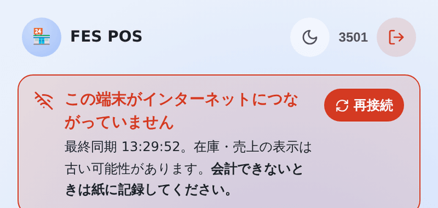
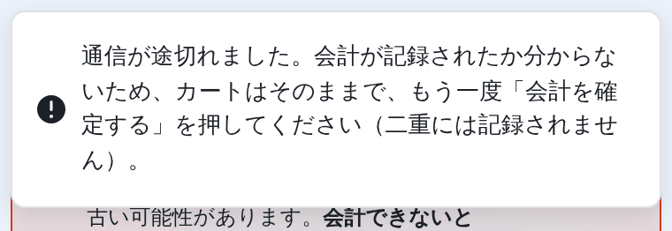
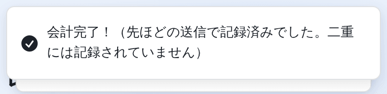
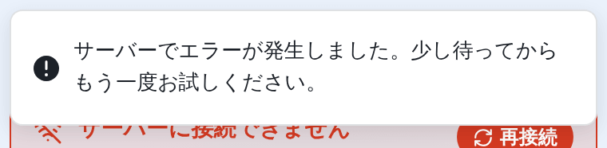

システムが止まっても、お店は止めない。
お金はいつも通り受け取り、売れたものは紙に書く。
直ったら紙の分をあとから入力すれば、売上も在庫も元通りになります。
画面にこれが出たら、こうする。

| 帯の文字 | やること |
|---|---|
| この端末がインターネットにつながっていません | あなたのスマホの電波の問題です。Wi-Fi・モバイルデータ・機内モードを確認。直らなければ、ほかの人の端末で会計します。 |
| サーバーに接続できません | ほかのレジも同じなら、システム側の問題です。管理者に伝えて、再接続 を押してみる。3分戻らなければ紙に切り替え。 |

会計が記録されたかどうか分からない状態です。カートはそのままで、もう一度「会計を確定する」を押してください。 1回目がじつは記録されていた場合でも、二重には記録されません。システムが自動で見分けます。

もう一度押したら、1回目がちゃんと記録されていたという意味です。正常です。そのまま次のお客様へ。

システム側の問題です（多くはデータベース）。少し待ってもう一度押す。何度やってもダメなら管理者に伝えて、紙に切り替え。
| こんなとき | やること |
|---|---|
| 「○○の在庫が不足しています」 | ほかのレジが先に売りました。実物がまだあるなら管理者に補充をお願いする。 |
| 「処理中…」から進まない | 最大15秒で「通信が途切れました」に変わります。変わったら上の手順。 |
| 画面が真っ白・固まった | ページを読み込み直す（アプリなら開き直す）。記録済みの売上は消えません。 |
| PINを5回まちがえた | いつも使っている自分のスマホなら5分待つ。忘れたなら管理者に（PIN管理でリセットしてもらう）。 |
| スマホの充電が切れた | 別の端末で自分の番号でログインすれば続けられます。 |
管理者・リーダー向け。上から順に確かめます。
その端末の問題（→ 3章A）
電波、アプリの再起動、再ログイン。ほかの端末で会計を続ける。
次のQ2へ。
fes-pos-xxxx.onrender.com/api/health）を開くと？サーバーが止まっている（→ 3章C）
ただし、そのスマホ自体がネットにつながっているかは先に確認。
データベースが止まっている（→ 3章D）
"starting" なら再起動直後。1〜2分待つ。
システムは正常（→ 3章B）
会場のネットワークが原因。モバイルデータに切り替える。
システムの状態を確認するためのページです。合言葉を入れたことのある端末で開くと、次のような文字が出ます。
合言葉を入れていない端末（外部の人と同じ）では、中身を隠すため {"status":"ok"} か {"status":"unavailable"} だけが出ます。その場合はレジのスマホで開き直してください。
{"status":"ok","server":"ok","db":"ok","dbLatencyMs":45,"commit":"5285c6e","time":"..."}
| 項目 | 意味 |
|---|---|
status | ok なら全部正常。degraded なら一部が止まっている |
db | データベース（TiDB）につながるか。error ならDBの障害。starting は再起動直後 |
dbLatencyMs | DBの応答時間（ミリ秒）。ふだんは数十〜数百。数千なら非常に遅い |
commit | いま動いているプログラムの版。修正を反映したとき、切り替わったかの確認に使う |
どの場合も、直している間はレジ係に紙で営業してもらいます。
| 状況 | 対応 |
|---|---|
| 「確認が完了しませんでした」と出る | 入力欄の下の確認（Cloudflare）が済む前に送信した。確認の枠に「成功しました」が出てから、もう一度押す。 出ない・何度やってもだめなら、Wi-Fiを切ってモバイル回線で試す（会場のネットワークがCloudflareを止めていることがある） |
| 「確認サービスにつながりませんでした」と出る |
サーバーからCloudflareに確認できていない（Cloudflare側の障害など）。ログイン済みのスマホはそのまま使える（確認はログインのときだけ）。
新しくログインする必要があるときは、確認を一時的に切る：Renderのダッシュボード → サービス → Environment で
TURNSTILE_SITE_KEY と TURNSTILE_SECRET_KEY を2つとも消して保存（自動で再デプロイ、数分）。
片方だけ消すとサーバーが起動しない（旧版が動き続ける）。復旧したら同じ値を2つとも戻す
|
| PINを5回まちがえた |
その番号でログインしたことのあるスマホなら、5分待てば解除される（ほかの人がその番号でミスしても、このスマホはロックされない）。 その番号で初めて使う端末からは、番号ごとに1時間に10回（管理者の番号は5回）、店全体で15分に30回までしか試せず、超えると最長1時間止まる（総当たり対策）。 いつもの自分のスマホで入る。急ぐならサーバーを再起動すると解ける（C） |
| 管理者の画面に「PINの入力ミスが○回」と赤い帯が出た |
PIN管理 → 操作タブで、どの番号に・どの端末から・何時に間違えたかを見る。本人の打ち間違いでなければ誰かがPINを試している。
その番号のPINを管理者がリセットし、本人に新しいPINを伝える。合言葉が漏れていそうなら合言葉も変える（Renderの POS_ACCESS_CODE）
|
| 初めての人が「承認待ち」になる | 本人の画面に出ている4文字の申請コードを見せてもらい、管理者がPIN管理の「承認待ち」にそのコードを入れて承認する。 コードが合わないときは、別の人が同じ番号で申請している。承認せず、本人にもう一度PINを設定してもらう（コードが新しくなる） |
| 一般メンバーがPINを忘れた | 管理者がPIN管理でリセットする |
| 管理者がPINを忘れた |
ほかの管理者がいればその人がPIN管理でリセットする。いなければ復旧コードで設定し直す（DBを直接触らない）:
|
| 合言葉の画面で「試行回数が多すぎます」 | 誰かが合言葉を何度も間違えたため、初めて使う端末が10分止まっている。前に合言葉を入れたことのある端末は影響を受けない。10分待つ |
| 状況 | 対応 |
|---|---|
| 間違えて会計した | 管理者が履歴から取消（削除ではなく取消）。売上も在庫も元に戻る |
| 在庫の数が実物と合わない | 多いとき：管理者が商品画面で初期在庫を直す。少ないとき：在庫画面で補充 |
| 全データリセットを押してしまった | 「全データリセット」と入力しないと実行されない。実行してしまった場合はアプリの中では元に戻せない（操作ログも消え、誰がリセットしたかだけが新しいログの1行目とRenderのログに残る）。閉店ごとに保存したCSVと紙の記録から作り直す。営業が始まったらリセットは絶対に使わない |
紙の分をあとから入力すれば、売上も在庫も正しくなります。
障害のほとんどは、前日までの準備で防げるか、影響を小さくできます。
"status":"ok" を返すことを確認した
データベースの表や列はサーバーの起動時に自動で作られる。drizzle-kit push は実行しない（もし実行して「テーブルを空にしますか（truncate）」と聞かれたら、必ず No）POS_ACCESS_CODE）が、推測されにくく、クラスの外に漏れていない値になっている。変えるとログイン済みのスマホもみんな合言葉を入れ直すので、全員に新しい合言葉を伝えてから
去年の合言葉や、どこかに書いて貼り出した合言葉は使わないPOS_ADMIN_RECOVERY_CODE が残っていないことを確認した（管理者が最初のPINを決めるときと、PINを忘れたときだけ使うもの）営業中に main に push すると、その瞬間に本番が切り替わります。
RenderはGitHubの main ブランチに push されると、自動で本番に反映（デプロイ）します。営業中にこれが起きると:
営業日は main に push しない（凍結）。見つけた不具合は、閉店後か翌日の開店前に直します。
commit が新しい版に変わったことを確認1会計1行。お金はいつも通り受け取り、おつりもいつも通り渡す。システムが直ったら、この用紙を管理者に渡す（レジ係は打ち直さない）。
| No | 時刻 | 商品と数量（例：たこ焼き×2、お茶×1） | 合計 | 預かり | 担当 | 入力済 |
|---|---|---|---|---|---|---|
| 1 | □ | |||||
| 2 | □ | |||||
| 3 | □ | |||||
| 4 | □ | |||||
| 5 | □ | |||||
| 6 | □ | |||||
| 7 | □ | |||||
| 8 | □ | |||||
| 9 | □ | |||||
| 10 | □ | |||||
| 11 | □ | |||||
| 12 | □ | |||||
| 13 | □ | |||||
| 14 | □ | |||||
| 15 | □ | |||||
| 16 | □ | |||||
| 17 | □ | |||||
| 18 | □ | |||||
| 19 | □ | |||||
| 20 | □ | |||||
| 21 | □ | |||||
| 22 | □ |
前日までに埋めて、各レジに置いておく。
| 役割 | 名前 | 連絡先 |
|---|---|---|
| 管理者（取消・補充・商品） | ||
| 管理者の代わり（不在時の判断） | ||
| Renderにログインできる人 | ||
| TiDB Cloudにログインできる人 | ||
| 担当の先生 |
| アプリ | https://＿＿＿＿＿＿＿＿＿＿＿＿＿＿.onrender.com |
|---|---|
| 健康チェック | 上のアドレス ＋ /api/health |
| Render（サーバー） | dashboard.render.com ／ 障害情報：status.render.com |
| TiDB Cloud（データベース） | tidbcloud.com |
次の障害は、本番と同じ構成（TiDB）を用意して実際に起こし、この手順書どおりに動くことを確認しています： 端末の圏外／サーバー停止／会計の応答だけが消える通信断／サーバーが固まる／データベース停止。 いずれも売上の欠落・二重記録は起きず、データベースは復旧後にサーバーの再起動なしで自動的に復帰しました。